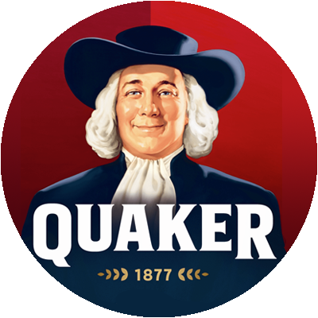

During my time at Crisp Media/Quotient Technologies one of my main responsibilities was working with clients to create a variety of engaging mobile ads. I worked directly with clients such as Coke, Unilever, ThinkGeek, ABSCO, and more.
This is a collection of a few of the ads I have worked on during my time at Crisp/Quotient.
∞ cups of coffee
2016 - 2018
Photoshop, HTML5 CSS3 Animations
Please choose client to view ads

Type of ad
This is a project description area - During my time at Crisp Media/Quotient Technologies one of my main responsibilities was working with clients to create a variety of engaging mobile ads. I worked directly with clients such as Coke, Unilever, ThinkGeek, ABSCO, and more.
Splash Adhesion Unit
This splash unit was designed to promote the new Monster Energy product, White Lightening. I worked in direct contact with Monster's sales team currently assigned to the project.
Using HTML5 animation and a variety of assets, I created the ad to flash like lightening and fog to roll in across the screen for 5 seconds before compressing down and displaying the adhesion banner unit.
Type of ad
This is a project description area - During my time at Crisp Media/Quotient Technologies one of my main responsibilities was working with clients to create a variety of engaging mobile ads. I worked directly with clients such as Coke, Unilever, ThinkGeek, ABSCO, and more.
Breakthrough Adhesion Expandable
This breakthrough unit was designed to promote the new Overnight Oats series of products and how to use them from Quaker. I worked with provided video footage and a variety of their product images to create a warm, homey, and upbeat ad to educate shoppers on morning on-the-go breakfast options.
The breakthrough unit features visuals that breach over the edge of the background to give the ad an extra pop and user engagement. Once clicked, the ad expands to feature a store locator and a video. Upon clicking the store locator map, the nearest location will be given to the user in their primary maps application.
Type of ad
This is a project description area - During my time at Crisp Media/Quotient Technologies one of my main responsibilities was working with clients to create a variety of engaging mobile ads. I worked directly with clients such as Coke, Unilever, ThinkGeek, ABSCO, and more.
Mobile Expandable
The Mars Boo-ing Halloween Chocolate ad is designed to work with their promotional material for the SpiderMan Homecoming movie to engage children and parents to purchase for Halloween. I worked with provided video footage, editing it to make it appear like SpiderMan is swinging through the neighborhood toward the viewer.
This Ad took a lot of careful video-editing, and layering and timing with HTML5.